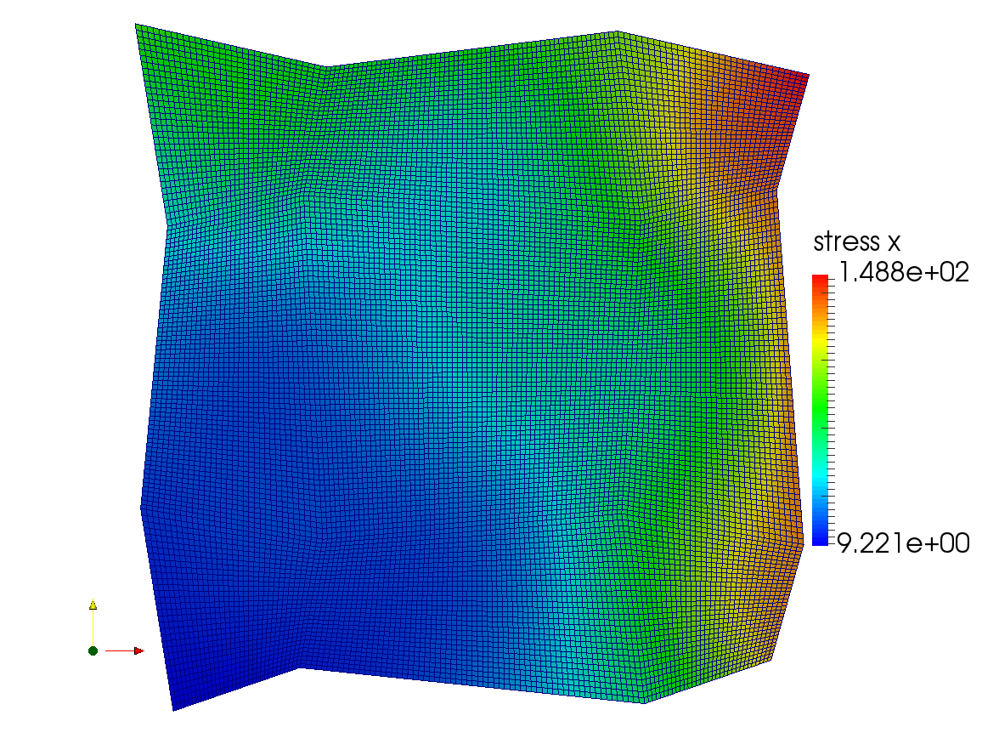

Research
My research interests include the numerical analysis of partial differential systems, mathematical modeling, and scientific computation. I've been working on developing both theoretical and numerical basis for modeling interaction of fluid flow and poroelastic media with various applications, including hydralic fracturing and hemodynamics.
List of projects
"Higher order multipoint flux mixed finite element methods on quadrilaterals and hexahedra",I. Ambartsumyan, E. Khattatov, J. Lee, I. Yotov.
We develop a procedure that allows to derive an arbitrary order finite volume methods for solving elliptic problems on quadrilateral and hexahedral grids that reduces the underlying mixed finite element method to cell-centered pressure system. The construction is motivated by the multipoint flux approximation (MPFA) method and the multipoint flux mixed finite element (MFMFE) method, where the latter is based on the lowest order Brezzi-Douglas-Marini mixed finite element method. The new family of mixed finite elements is constructed, which, with a special quadrature rule being employed, allows for local velocity elimination and leads to a symmetric and positive definite cell-centered system for the pressures. Theoretical and numerical results indicate optimal -th order of convergence for velocities and pressures in their natural norms. Superconvergence of order
was analyzed and observed numerically for the pressures at the respective nodes.
Status: submitted to Mathematics of Computation . Download paper .
 "Coupled multipoint flux and multipoint stress mixed finite element method for the Biot poroelasticity model",
I. Ambartsumyan, E. Khattatov, I. Yotov.
In this work we present a mixed finite element method for five-field Biot's consolidation model that reduces to cell-centered finite differences for displacement and pressure on quadrilateral and simplicial grids. The method is guaranteed to perform robustly with discontinuous full tensor permeability coefficients and heterogeneous elasticity parameters, which is verified by the error analysis. Our approach is motivated by multipoint flux approximation (MPFA) method and multipoint stress approximation (MPSA) methods, while the approach we take is based on more recent multipoint flux mixed finite element (MFMFE) method and multipoint stress mixed finite element (MSMFE) method, for Darcy and linear elasticity models, respectively. Our scheme couples the latter two methods for the spatial discretization of the Biot's poroelasticity system, and is based on the lowest order Brezzi-Douglas-Marini mixed finite element spaces. The special quadrature rule is then employed, that allows for the local stress, rotation and velocity elimination and leads to a symmetric and positive-definite system for displacements and pressures. Theoretical and numerical studies indicate first-order accuracy in all variables in their natural norms.
Status: work in progress.
 "Mixed finite volume methods for linear elasticity",
"Mixed finite volume methods for linear elasticity", I. Ambartsumyan, E. Khattatov, I. Yotov.
We present a new mixed finite element method for linear elasticity with weakly enforced stress symmetry on simplicial grids. Motivated by the multipoint flux mixed finite element method for Darcy flow, we consider a special quadrature rule that allows for elimination of the stress and rotation variables and leads to a cell- centered system for the displacements. Theoretical and numerical results indicate first-order convergence for all variables in the natural norms.
Status: published in "Finite Volumes for Complex Applications VIII", Springer. Download paper .
"A nonlinear Biot-Stokes model for the interaction of a non-Newtonian fluid with poroelastic media, parts I
I. Ambartsumyan, V.J Ervin, T. Nguen, I. Yotov.
We propose and analyze a model for solving the coupled problem arising in the interaction of a free fluid with a poroelastic structure. The flow in the fluid region is described by Stokes equations and in the poroelastic medium by the quasi-static Biot model. In many applications the fluid in both regions exhibits properties that cannot be captured by a Newtonian fluid assumption. For instance, during water flooding in oil extraction, polymeric solutions are often added to the aqueous phase to increase its viscosity, resulting in a more stable displacement of oil by the injected water. Another example is related to hemodynamics, where the blood flow simulations using the Newtonian fluid models are sufficiently accurate in case for flows in large arteries. However, in the small vessels or for patients with cardiovascular disease, where the arterial geometry has been altered to include regions of recirculation, one needs to consider more complex models that can capture important properties of blood. Motivated by such applications, we focus on the quasi-Newtonian fluids with a shear-thinning property.
Status: work in progress.
 "A multipoint stress mixed finite element method for elasticity, parts I
"A multipoint stress mixed finite element method for elasticity, parts II. Ambartsumyan, E. Khattatov, J. Nordbotten, I. Yotov.
We develop a new mixed finite element method for linear elasticity model with weakly enforced symmetry on simplicial (2 and 3 dimensional) and quadrilateral grids. Motivated by the multipoint flux mixed finite element method for flow in porous media, the method utilizes lowest order Brezzi-Douglas-Marini finite element spaces and the trapezoidal (vertex) quadrature rule in order to localize the interaction of degrees of freedom. In particular, this allows for local elimination of stress and rotation variables around each vertex and leads to a cell-centered system for the displacements. The stability analysis shows that the method is well-posed on simlicial and quadrilateral grids. Theoretical and numerical results indicate first-order convergence for all variables in the natural norms. The duality argument is further employed to prove the superconvergence of the displacements at cell centers.
Status: preprint. Download poster .
"A Lagrange multiplier method for a Stokes-Biot fluid-poroelastic structure interaction model",
I. Ambartsumyan, E. Khattatov I. Yotov, P. Zunino.
We study a finite element computational model for solving the coupled problem arising in the interaction between flow in a poroelastic medium and free fluid. The free fluid is governed by the Stokes equations, while the poroelastic material is modeled using the Biot poroelasticity system. Equilibrium and kinematic conditions are imposed on the interface via the Lagrange multiplier method. A complete stability and error analysis is performed for the semi-discrete continuous-in-time and the fully discrete formulations. A series of numerical experiments are presented to confirm the theoretical convergence rates and to study the applicability of the method to modeling physical phenomena and the sensitivity of the model with respect to its parameters.
Status: submitted to Numerische Mathematik . Download paper or poster .
"Simulation of flow in fractured poroelastic media: a comparison of different discretization approaches",
I. Ambartsumyan, E. Khattatov, I. Yotov, P. Zunino.
We study two finite element computational models for solving coupled problems involving flow in a fracture and flow in poroelastic media. The Brinkman equation is used in the fracture, while the Biot system of poroelasticity is employed in the surrounding media. Appropriate equilibrium and kinematic conditions are imposed on the interfaces. We focus on the approximation of the interface conditions, which in this context feature the interaction of different variables, such as velocities, displacements, stresses and pressures. The aim of this study is to compare the Lagrange multiplier and the Nitsche’s methods applied to enforce these non standard interface conditions.
Status: published in Finite Difference Methods,Theory and Applications, FDM 2014 . Download paper .
"Stochastic multiscale flux basis for Stokes- Darcy flows",
I. Ambartsumyan, E. Khattatov C. Wang, I. Yotov.
We present one traditional and two multiscale flux basis implementations for coupled Stokes and Darcy flows with stochastic permeability, with its log represented as a sum of local Karhunen-Loève (KL) expansions. The problem is approximated by stochastic collocation on either a tensor product or a sparse grid, coupled with multiscale mortar mixed finite element method using non-overlapping domain decomposition for the spatial discretization. A coarse scale mortar interface problem is formulated and solved by iterative solver. In the traditional implementation, each subdomain solves local Dirichlet or Neumann problem in every interface iteration. To reduce this cost, two algorithms based on deterministic or stochastic multiscale flux basis are introduced, where the latter is formed by looping all local realizations of a subdomain’s KL region in a precomputation loop before the stochastic collocation begins. Some numerical tests are presented to illustrate the performances of these algorithms, with the stochastic multiscale flux basis showing a great advantage in computational cost among all.
Status: preprint.
"Mapping of temperatures from coarser to finer grid using temporal derivatives",
I. Ambartsumyan, E. Khattatov, C. He, S. Kim,L. Mrad.
In many practical situations encountered in industries, there is incomplete knowledge of material properties, boundary conditions, and sources for a given material/manufacturing process. However, process monitors such as thermocouples are typically used to measure temperature evolution in certain locations to bridge the resulting gaps. Spatial gradients of temperature are needed to predict required quantities such as internal stresses developed during the process. The temperature measurements are typically performed on a coarse grid. Computation of stresses needs temperatures on a much finer grid for a more precise estimation of spatial gradients. Usually bilinear and/or weighted interpolation techniques are used to improve the spatial resolution of temperatures. However, in the cases where there are strong exothermic and/or endothermic reactions occurring during the process, such interpolation techniques are error-prone. Using more thermocouples to measure temperature on finer grid would be an easy solution. However, such measurement is intrusive as well as perturbing in addition to increasing the cost of data acquisition. The mapping of temperatures from coarser grid to finer grid is an ill-posed problem. In addition to the spatial distribution temperatures, the thermocouple measurements also contain valuable temporal information in the form of derivatives. This additional information of temporal derivatives helps in improving the conditioning of the apparently ill-posed problem. The objective of this exercise is to develop an algorithm/procedure for mapping temperatures from coarse grid to a finer grid recognizing as well as the valuable temporal information in the corresponding derivatives.
Status: IMA MMI XIX workshop technical report, download .